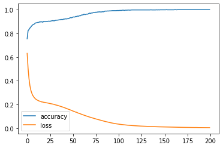
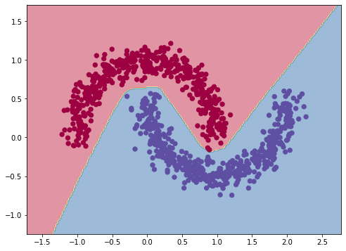

import numpy as np
import tensorflow as tf
import matplotlib.pyplot as plt
from sklearn.datasets import make_moons1. Make toy data using sklearn.make_moons
X, y = make_moons(n_samples=(500, 500), noise=0.1, random_state=42)
plt.scatter(X[:,0], X[:,1], c=y, cmap=plt.cm.Spectral);
2. Build and train a simple MLP model
model=tf.keras.Sequential([
tf.keras.layers.Dense(100, activation='relu'),
tf.keras.layers.Dense(1, activation='sigmoid')
])
model.compile(loss='binary_crossentropy',
optimizer='adam',
metrics=['accuracy'])
log = model.fit(X, y, epochs=200, verbose=0)plt.plot(log.history['accuracy'], label='accuracy')
plt.plot(log.history['loss'], label='loss')
plt.legend()
plt.show();
3. Plot decision boundary
def show_boundary(X, y, model):
x_min = X[:, 0].min() - 0.5,
x_max = X[:, 0].max() + 0.5
y_min = X[:, 1].min() - 0.5
y_max = X[:, 1].max() + 0.5
# generate meshgrid
xx, yy = np.meshgrid(np.linspace(x_min, x_max, 200),
np.linspace(y_min, y_max, 200))
X_mesh = np.c_[xx.ravel(), yy.ravel()]
# predict on meshgrid points
y_preds = model.predict(X_mesh)
# convert to labels
if y_preds.shape[1] > 1:
y_preds = np.argmax(y_preds, axis=1)
else:
y_preds = np.round(y_preds)
# reshape predictions for plotting
y_preds = y_preds.reshape(xx.shape)
# plot the decision boundary
plt.figure(figsize=(8,6))
cmap = plt.cm.Spectral
plt.contourf(xx, yy, y_preds, cmap=cmap, alpha=.5)
plt.scatter(X[:, 0], X[:, 1], c=y, s=40, cmap=cmap)
plt.xlim(xx.min(), xx.max())
plt.ylim(yy.min(), yy.max())
show_boundary(X, y, model)